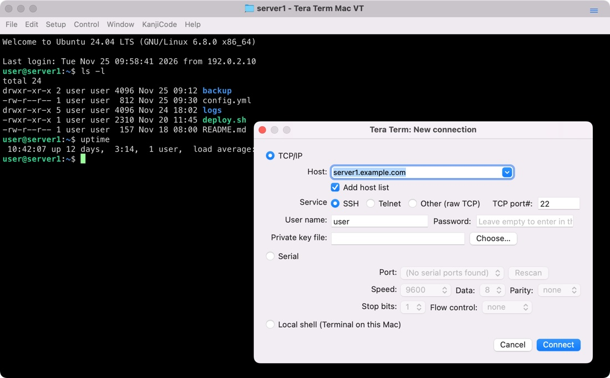
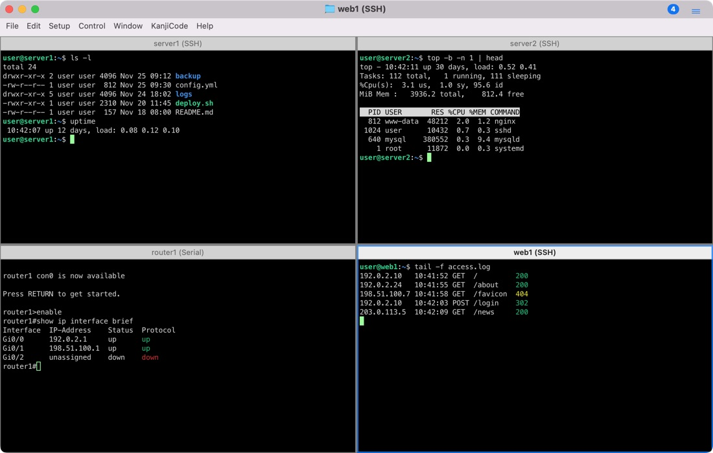
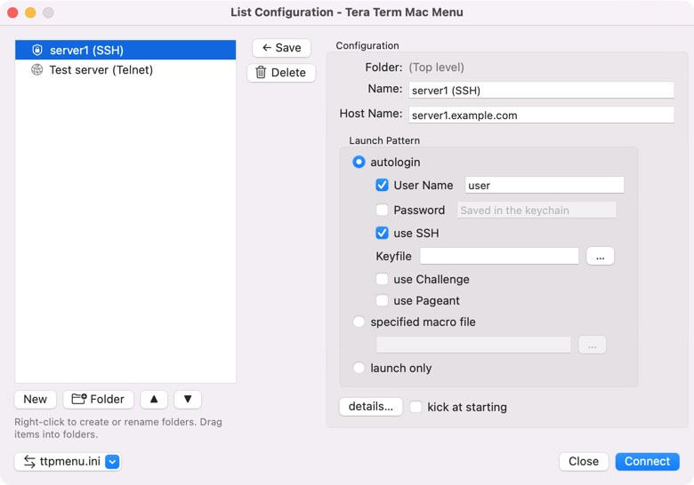
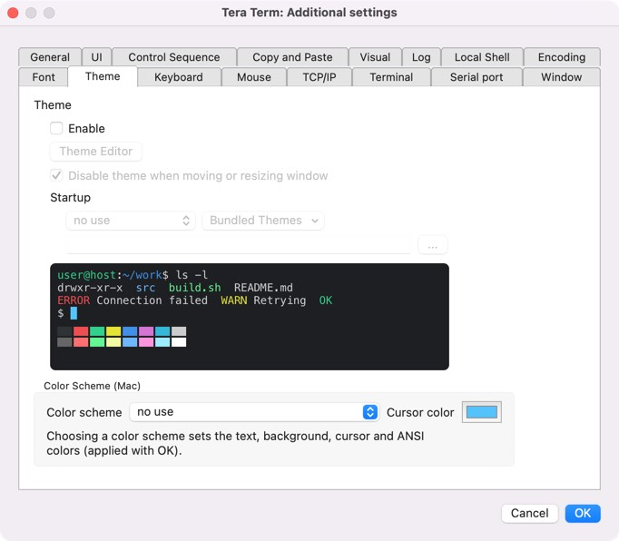

Tera Term Mac
Tera Term, ported to macOS.
Use your usual SSH and macros on your Mac, just as they are.
Tera Term Mac is an independent port to macOS, forked from TeraTerm Project's Tera Term. It is approved by the original author, T. Teranishi, and developed separately from TeraTerm Project. For questions about the Mac version, please use the Tera Term Mac Issues, not TeraTerm Project.




Features
- Connect over SSH, Telnet, serial ports, or this Mac's local shell
- TTL macros (your Windows .ttl files run as they are)
- TeraTerm Menu to save hosts (passwords in the keychain)
- Logging, and file transfer with XMODEM, YMODEM, ZMODEM, Kermit and more
- Tabs, and split panes inside one window
- 14 interface languages. Automatic updates
Documentation
Everything about using the app is in the documentation. The same pages are in the app's [Help] menu.
Download and install
- Download
TeraTermMac.dmgwith the button below. - Open the DMG and drag Tera Term Mac to the Applications folder.
- Open it from Applications. The app tells you when a new version is out.